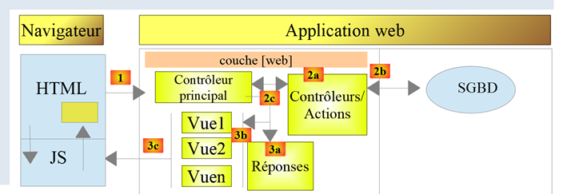
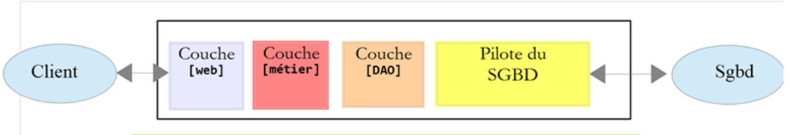
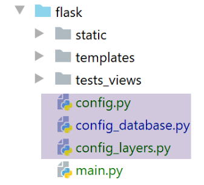
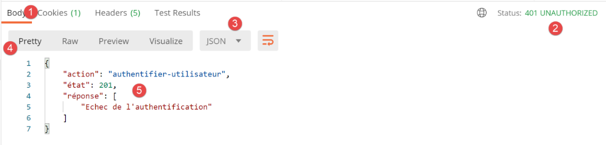
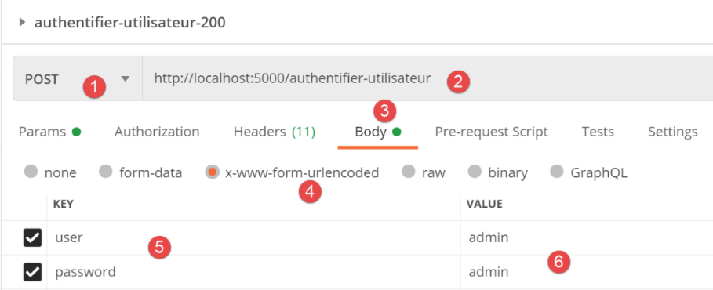
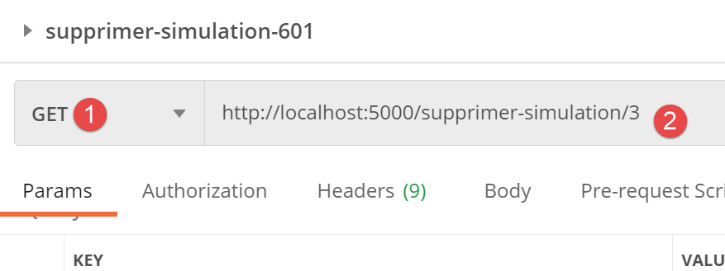

30. 实践练习：第 12 版
在本章中，我们将编写一个遵循 MVC（模型-视图-控制器）架构的 Web 应用程序。该应用程序将能够以三种格式返回响应：JSON、XML 和 HTML。我们即将进行的操作与之前所做的工作相比，复杂度有了显著提升。我们将复用迄今为止涵盖的大部分概念，并详细说明通向最终应用程序的所有步骤。
30.1. MVC 架构
我们将按以下方式实现 MVC（模型-视图-控制器）架构模式：

处理客户端请求的流程如下：
请求的 URL 将采用 http://machine:port/action/param1/param2/… 的形式。[主控制器] 将通过配置文件将请求“路由”到正确的控制器。为此，它将使用 URL 中的 [操作] 字段 。URL 的其余部分 [param1/param2/…] 由可选参数组成，这些参数将传递给该操作。 此处 MVC 中的“C”指代 [主控制器、控制器 / 操作] 这一链条。如果没有任何控制器能处理所请求的操作，Web 服务器将返回“未找到所请求的 URL”的响应。
- 2 - 处理
- 选定的操作 [2a] 可以使用 [主控制器] 传递给它的参数。这些参数可能来自两个来源：
- URL 的路径 [/param1/param2/…]，
- 客户端请求主体中提交的参数；
- 在处理用户请求时，该操作可能需要调用 [业务] 层 [2b]。一旦客户端的请求被处理完毕，可能会触发各种响应。一个典型的例子是：
- 若请求无法正确处理，则返回错误响应；
- 否则返回确认响应；
- [控制器/操作] 将连同状态码一起将其响应 [2c] 返回给主控制器。这些状态码将唯一地表示应用程序的当前状态。它要么是成功码，要么是错误码；
- 3 - 响应
- 根据客户端请求的是 JSON、XML 还是 HTML 响应，[主控制器] 将实例化 [3a] 相应的响应类型，并指示其将响应发送给客户端。主控制器将同时向其传递响应以及由已执行的 [控制器/操作] 提供的状态码；
- 如果所需的响应为 JSON 或 XML 类型，则所选响应将根据 [控制器/操作] 提供的内容格式化响应并发送出去 [3c]。能够处理此响应的客户端可以是 Python 控制台脚本，也可以是嵌入在 HTML 页面中的 JavaScript 脚本；
- 如果期望的响应是 HTML 类型，则选定的响应将根据收到的状态码选择 [3b] 其中一个 HTML 视图 [Vuei]。 这就是 MVC 中的 V。一个视图对应一个状态码。该视图 V 将显示已执行的 [控制器/操作] 返回的响应。它将该响应中的数据封装在 HTML、CSS 和 JavaScript 中。这些数据被称为视图模型。这就是 MVC 中的 M。客户端通常是浏览器；
现在，让我们澄清 MVC Web 架构与分层架构之间的关系。根据模型的定义方式，这两个概念可能相关，也可能无关。让我们考虑一个单层 MVC Web 应用程序：

在上例中，每个 [控制器/操作] 都集成了 [业务] 层和 [DAO] 层的部分内容。在 [Web] 层中，我们确实采用了 MVC 架构，但整个应用程序并不具备分层架构。这里仅存在一个层——Web 层——它负责处理所有事务。
现在，让我们考虑一个多层Web架构：

[Web] 层可以不遵循 MVC 模型来实现。这样我们就有了多层架构，但 Web 层并未实现 MVC 模型。
例如，在 .NET 环境中，上述 [Web] 层可以使用 ASP.NET MVC 来实现，从而形成一个具有 MVC 风格 [Web] 层的分层架构。完成这一步后，我们可以将这个 ASP.NET MVC 层替换为经典的 ASP.NET 层（WebForms），同时保持其余部分（业务逻辑、DAO、驱动程序）不变。 这样，我们就得到了一种分层架构，其 [Web] 层不再基于 MVC。
在 MVC 中，我们曾提到 M 模型即 V 视图所呈现的数据集。关于 MVC 中 M 模型的另一种定义如下：

许多作者认为，位于[Web]层右侧的部分构成了MVC的M模型。为避免歧义，我们可以将其称为：
- 当指代[Web]层右侧的所有内容时，称之为领域模型；
- 当指代视图 V 所显示的数据时，称之为视图模型；
下文中，凡提及“模型”，均特指视图模型。
30.2. 客户端/服务器应用程序架构
Web 应用程序将采用以下架构：

- 在[1]中，Web服务器将拥有两类客户端：
- 在[2]中，一个与服务器交换JSON和XML的控制台客户端；
- 在 [3] 中，浏览器将从服务器接收 HTML 并进行显示；
- Web 服务器 [1] 保留了之前版本中的 [业务] 和 [DAO] 层；
- Web客户端[2]将进行更新，以适配Web应用程序的新服务URL；
- 浏览器显示的 HTML 应用程序必须从头开始编写；
我们将分几个阶段开发该应用程序：
- 我们将开发服务器的 JSON 版本。我们将使用 Postman 客户端逐一测试服务器的服务 URL。这种方法使我们能够构建 Web 服务器的框架，而无需担心应用程序的视图（即 HTML）；
- 在用 Postman 测试完 JSON 服务器后，我们将使用控制台客户端进行测试；
- 接下来我们将转向服务器的 XML 版本。我们已经看到，从 JSON 切换到 XML 非常简单；
- 最后，我们将转向服务器的 HTML 版本。我们将构建一个 MVC 架构，并定义要显示的视图。该 HTML 应用程序将通过 Postman 客户端和标准浏览器进行测试；
30.3. 服务器代码目录结构

- 在 [1] 中：整个 Web 服务器；
- 在 [2] 中：目前我们将忽略 [static, templates, tests_views] 文件夹，这些文件夹与服务器的 HTML 版本相关。在此文件夹之外，我们将找到主脚本 [main] 及其配置；
- 在 [3] 中，是 Web 服务器控制器。这些将作为类实例存在；
- 在 [4] 中，服务器的 HTTP 响应将由类来处理；
- 在[5]中，我们保留了前几个服务器的日志文件；
当我们构建服务器的 HTML 版本时，其他文件夹也将发挥作用：
- 在 [6] 中，是 HTML 应用程序的静态元素；
- 在 [7] 中，HTML 应用程序模板被拆分为视图 [9] 和视图片段 [8]；
- 在 [9] 中，实现视图模型的类；
30.4. 应用程序的服务 URL
要构建 Web 服务器，我们将按以下步骤进行：
- 基于 HTML 应用程序的视图，我们将定义 Web 应用程序必须实现的操作。此处我们将使用实际的视图，但这些视图也可以只是纸面上的草图；
- 基于这些操作，我们将定义 HTML 应用程序的服务 URL；
- 我们将使用一个返回 JSON 的服务器来实现这些服务 URL。这样，我们就可以定义 Web 服务器的框架，而无需担心要提供的 HTML 页面。我们将使用 Postman 测试这些服务 URL；
- 随后，我们将使用控制台客户端测试我们的 JSON 服务器；
- 一旦 JSON 服务器通过验证，我们将着手编写 HTML 应用程序；
第一个视图将是身份验证视图：

- 引导至该首个视图的操作将命名为 [init-session] [1]；
- 点击 [验证] 按钮将触发 [authenticate-user] 操作，并提交两个参数 [2-3]；
税费计算视图：

- 在 [1] 处，是导致进入此视图的 [authenticate-user] 操作；
- 在 [2] 处，点击 [Validate] 按钮将触发 [calculate-tax] 操作的执行，并携带三个提交参数 [2-5]；
- 点击链接 [6] 将触发 [list-simulations] 操作，不带参数；
- 点击链接 [7] 将触发不带参数的 [end-session] 操作；
第三个视图显示了已认证用户执行的模拟：

- 在 [3] 中，导致此视图显示的操作 [list-simulations]；
- 在 [2] 中，点击 [删除] 链接会触发 [delete-simulation] 操作，并带有一个参数：要从列表中删除的模拟编号；
- 点击 [3] 链接会触发不带参数的 [display-tax-calculation] 操作，该操作将重新显示税费计算视图；
- 点击 [4] 链接将触发不带参数的 [end-session] 操作；
基于这些初步信息，我们可以定义服务器的各种服务 URL：
操作 | 角色 | 执行上下文 |
/init-session | 用于设置所需响应的类型（json、xml、html） | GET 请求 可在任何时候发送 |
/authenticate-user | 授权或拒绝用户的登录 | POST 请求。 请求必须包含两个提交的参数 [user, password] 仅在已知会话类型（json、xml、html）时才能发出 |
/calculate-tax | 执行税费计算模拟 | POST 请求。 请求必须包含三个提交参数 [married, children, salary] 仅当已知会话类型（json、xml、html）且用户已通过身份验证时才能发出 |
/list-simulations | 请求查看自会话开始以来执行的模拟列表 | GET 请求。 只有在已知会话类型（json、xml、html）且用户已通过身份验证的情况下才能发出 |
/delete-simulation/number | 从模拟列表中删除一个模拟 | GET 请求。 只有在已知会话类型（json、xml、html）且用户已通过身份验证的情况下，才能发出此请求 |
/display-tax-calculation | 显示税费计算的 HTML 页面 | GET 请求。 只有在已知会话类型（json、xml、html）且用户已通过身份验证的情况下才能发出 |
/end-session | 结束模拟会话。 | 从技术上讲，旧的 Web 会话将被删除，并创建一个新的会话 只有在已知会话类型（json、xml、html）且用户已通过身份验证的情况下才能发出 |
这些不同的服务 URL 将同时用于 HTML 服务器和 JSON 或 XML 服务器。其中有两个 URL 专用于后两类服务器：这些是来自客户端/Web 服务器旧版本的 URL，我们在此处将其复用：
操作 | 角色 | 执行上下文 |
/get-admindata | 返回用于计算 税款的税务数据 | GET 请求。 仅在会话类型为 json 或 xml 时使用。用户必须经过身份验证 |
/calculate-taxes | 根据在 JSON | GET 请求中。 仅在会话类型为 json 或 xml 时使用。用户必须经过身份验证 |
与这些操作关联的所有控制器将按相同方式处理：
- 它们将检查参数。这些参数位于对象中：
- [request.path] 用于存储 URL 中以 [/action/param1/param2/…] 形式存在的参数；
- 在 [request.form] 对象中查找以 [x-www-form-urlencoded] 格式通过请求主体传输的参数；
- 对于请求正文中以 JSON 格式传输的数据，可在 [request.data] 对象中获取；
- 控制器类似于一个用于检查其参数有效性的函数或方法。但对于控制器而言，情况要复杂一些：
- 预期的参数可能缺失；
- 控制器获取的参数是字符串。如果预期参数是数字，则控制器必须验证该字符串是否确实代表一个数字；
- 在验证预期参数存在且语法正确后，必须验证它们在当前执行上下文中是否有效。该上下文存在于会话中。身份验证示例就是执行上下文的一个例子。某些操作应仅在客户端通过身份验证后才进行处理。通常，会话中的某个键会指示该身份验证是否已完成；
- 完成上述检查后，次级控制器方可继续执行。此参数验证过程至关重要。在应用程序生命周期的任何阶段，我们都不能接受客户端发送任意数据。我们必须对应用程序的生命周期保持完全控制；
- 完成工作后，二级控制器会向调用它的主控制器返回一个键值为 [action, state, response] 的字典：
- [action] 表示刚刚执行的操作；
- [state] 是一个三位数，表示操作处理的结果：
- [x00] 表示处理成功；
- [x01] 表示处理失败；
- [response] 是结果字典，形式为 {‘response’:object}。该对象的结构将根据正在处理的操作而有所不同；
接下来我们将回顾驱动 Web 应用程序工作流的各种控制器——或者换句话说，这些控制器所处理的不同操作。
30.5. 服务器配置

数据库配置 [config_database] 和服务器层配置 [config_layers] 与之前版本完全一致。现在 [config] 文件中包含了一些新信息：
| def configure(config: dict) -> dict:
import os
# step 1 ------
# folder of this file
script_dir = os.path.dirname(os.path.abspath(__file__))
# root path
root_dir = "C:/Data/st-2020/dev/python/cours-2020/python3-flask-2020"
# dependencies
absolute_dependencies = [
# project files
# BaseEntity, MyException
f"{root_dir}/classes/02/entities",
# InterfaceImpôtsDao, InterfaceImpôtsMétier, InterfaceImpôtsUi
f"{root_dir}/impots/v04/interfaces",
# AbstractImpôtsdao, ImpôtsConsole, ImpôtsMétier
f"{root_dir}/impots/v04/services",
# ImpotsDaoWithAdminDataInDatabase
f"{root_dir}/impots/v05/services",
# AdminData, ImpôtsError, TaxPayer
f"{root_dir}/impots/v04/entities",
# Constants, slices
f"{root_dir}/impots/v05/entities",
# Logger, SendAdminMail
f"{root_dir}/impots/http-servers/02/utilities",
# scripts [config_database, config_layers]
script_dir,
# controllers
f"{script_dir}/../controllers",
# answers HTTP
f"{script_dir}/../responses",
# view models
f"{script_dir}/../models_for_views",
]
# set the syspath
from myutils import set_syspath
set_syspath(absolute_dependencies)
# web server dependencies
# controllers
from AfficherCalculImpotController import AfficherCalculImpotController
from AuthentifierUtilisateurController import AuthentifierUtilisateurController
from CalculerImpotController import CalculerImpotController
from CalculerImpotsController import CalculerImpotsController
from FinSessionController import FinSessionController
from GetAdminDataController import GetAdminDataController
from InitSessionController import InitSessionController
from ListerSimulationsController import ListerSimulationsController
from MainController import MainController
from SupprimerSimulationController import SupprimerSimulationController
# answers HTTP
from HtmlResponse import HtmlResponse
from JsonResponse import JsonResponse
from XmlResponse import XmlResponse
# view models
from ModelForAuthentificationView import ModelForAuthentificationView
from ModelForCalculImpotView import ModelForCalculImpotView
from ModelForErreursView import ModelForErreursView
from ModelForListeSimulationsView import ModelForListeSimulationsView
# step 2 ------
# application configuration
config.update({
# users authorized to use the application
"users": [
{
"login": "admin",
"password": "admin"
}
],
# log file
"logsFilename": f"{script_dir}/../data/logs/logs.txt",
# server config SMTP
"adminMail": {
# server SMTP
"smtp-server": "localhost",
# server port SMTP
"smtp-port": "25",
# director
"from": "guest@localhost.com",
"to": "guest@localhost.com",
# mail subject
"subject": "plantage du serveur de calcul d'impôts",
# tls to True if server SMTP requires authorization, False otherwise
"tls": False
},
# thread pause time in seconds
"sleep_time": 0,
# authorized shares and their auditors
"controllers": {
# initialization of a calculation session
"init-session": InitSessionController(),
# user authentication
"authentifier-utilisateur": AuthentifierUtilisateurController(),
# tax calculation in individual mode
"calculer-impot": CalculerImpotController(),
# batch mode tax calculation
"calculer-impots": CalculerImpotsController(),
# list of simulations
"lister-simulations": ListerSimulationsController(),
# deleting a simulation
"supprimer-simulation": SupprimerSimulationController(),
# end of calculation session
"fin-session": FinSessionController(),
# display tax calculation view
"afficher-calcul-impot": AfficherCalculImpotController(),
# obtaining data from tax authorities
"get-admindata": GetAdminDataController(),
# main controller
"main-controller": MainController()
},
# different response types (json, xml, html)
"responses": {
"json": JsonResponse(),
"html": HtmlResponse(),
"xml": XmlResponse()
},
# HTML views and their models depend on the state rendered by the controller
"views": [
{
# authentication view
"états": [
# /init-session success
700,
# /authentifier-user failure
201
],
"view_name": "views/vue-authentification.html",
"model_for_view": ModelForAuthentificationView()
},
{
# tax calculation
"états": [
# /authentifier-user success
200,
# /calculate-tax-success
300,
# /calculate-tax failure
301,
# /show-tax-calculation
800
],
"view_name": "views/vue-calcul-impot.html",
"model_for_view": ModelForCalculImpotView()
},
{
# view of simulation list
"états": [
# /lister-simulations
500,
# /suppress-simulation
600
],
"view_name": "views/vue-liste-simulations.html",
"model_for_view": ModelForListeSimulationsView()
}
],
# view of unexpected errors
"view-erreurs": {
"view_name": "views/vue-erreurs.html",
"model_for_view": ModelForErreursView()
},
# redirections
"redirections": [
{
"états": [
400, # /end-session successful
],
# redirection to
"to": "/init-session/html",
}
],
}
)
# step 3 ------
# database configuration
import config_database
config["database"] = config_database.configure(config)
# step 4 ------
# instantiation of application layers
import config_layers
config['layers'] = config_layers.configure(config)
# we return the configuration
return config
|
- 在第 41 行之前，我们可以看到标准元素；
- 第 43–66 行：到第 43 行时，已定义服务器的 Python 路径。随后我们可以导入项目的依赖项：
- 第 45–55 行：控制器列表；
- 第 57–60 行：HTTP 响应列表；
- 第 62–66 行：视图模板列表；
- 第 68–189 行：包含一系列常量的应用程序配置；
- 第 71–98 行：这些代码行我们在之前的版本中已经很熟悉了；
- 第 101–122 行：控制器字典：
- 键是操作的名称；
- 值为负责处理该操作的控制器实例。每个控制器都作为单例（singleton）实例化。同一个实例将由不同的服务器线程执行。因此，对于每个控制器可能想要修改的共享数据，必须格外小心；
- 第 125–129 行：三种可能的 HTTP 响应字典：
- 键是客户端请求的响应类型（JSON、XML、HTML）；
- 值为 HTTP 响应的实例。每个响应生成器都作为单例（singleton）实例化。同一个生成器将由不同的服务器线程执行。因此，必须谨慎处理每个生成器可能想要修改的共享数据；
- 第 132–186 行：HTML 视图的配置。目前，我们将忽略这些行；
- 第 191–202 行：我们在之前的版本中已经遇到过这些行；
30.6. 客户端请求在服务器中的路径
我们将追踪客户端请求到达服务器直至返回 HTTP 响应的整个路径。该流程遵循 MVC 服务器的处理流程。
30.6.1. [main]脚本
[main]脚本在许多方面与之前的版本完全相同。尽管如此，我们仍将其完整呈现，以确保我们能有一个良好的开端：
| # a mysql or pgres parameter is expected
import sys
syntaxe = f"{sys.argv[0]} mysql / pgres"
erreur = len(sys.argv) != 2
if not erreur:
sgbd = sys.argv[1].lower()
erreur = sgbd != "mysql" and sgbd != "pgres"
if erreur:
print(f"syntaxe : {syntaxe}")
sys.exit()
# configure the application
import config
config = config.configure({'sgbd': sgbd})
# dependencies
from flask import request, Flask, session, url_for, redirect
from flask_api import status
from SendAdminMail import SendAdminMail
from myutils import json_response
from Logger import Logger
import threading
import time
from random import randint
from ImpôtsError import ImpôtsError
import os
# send an e-mail to the administrator
def send_adminmail(config: dict, message: str):
# send an e-mail to the application administrator
config_mail = config["adminMail"]
config_mail["logger"] = config['logger']
SendAdminMail.send(config_mail, message)
# check log file
logger = None
erreur = False
message_erreur = None
try:
# logger
logger = Logger(config["logsFilename"])
except BaseException as exception:
# log console
print(f"L'erreur suivante s'est produite : {exception}")
# we note the error
erreur = True
message_erreur = f"{exception}"
# store the logger in the config
config['logger'] = logger
# error handling
if erreur:
# mail to administrator
send_adminmail(config, message_erreur)
# end of application
sys.exit(1)
# start-up log
log = "[serveur] démarrage du serveur"
logger.write(f"{log}\n")
print(log)
# data recovery from tax authorities
erreur = False
try:
# admindata will be read-only application data
config["admindata"] = config["layers"]["dao"].get_admindata().asdict()
# success log
logger.write("[serveur] connexion à la base de données réussie\n")
except ImpôtsError as ex:
# we note the error
erreur = True
# error log
log = f"L'erreur suivante s'est produite : {ex}"
# console
print(log)
# log file
logger.write(f"{log}\n")
# mail to administrator
send_adminmail(config, log)
# the main thread no longer needs the logger
logger.close()
# if there has been an error, we stop
if erreur:
sys.exit(2)
# flask application
app = Flask(__name__, template_folder="templates", static_folder="static")
# session secret key
app.secret_key = os.urandom(12).hex()
# the front controller
def front_controller() -> tuple:
# the request is processed
logger = None
…
@app.route('/', methods=['GET'])
def index() -> tuple:
# redirect to /init-session/html
return redirect(url_for("init_session", type_response="html"), status.HTTP_302_FOUND)
# init-session
@app.route('/init-session/<string:type_response>', methods=['GET'])
def init_session(type_response: str) -> tuple:
# execute the controller associated with the action
return front_controller()
# authenticate-user
@app.route('/authentifier-utilisateur', methods=['POST'])
def authentifier_utilisateur() -> tuple:
# execute the controller associated with the action
return front_controller()
# calculate-tax
@app.route('/calculer-impot', methods=['POST'])
def calculer_impot() -> tuple:
# execute the controller associated with the action
return front_controller()
# lister-simulations
@app.route('/lister-simulations', methods=['GET'])
def lister_simulations() -> tuple:
# execute the controller associated with the action
return front_controller()
# delete-simulation
@app.route('/supprimer-simulation/<int:numero>', methods=['GET'])
def supprimer_simulation(numero: int) -> tuple:
# execute the controller associated with the action
return front_controller()
# end of session
@app.route('/fin-session', methods=['GET'])
def fin_session() -> tuple:
# execute the controller associated with the action
return front_controller()
# display-calculation-tax
@app.route('/afficher-calcul-impot', methods=['GET'])
def afficher_calcul_impot() -> tuple:
# execute the controller associated with the action
return front_controller()
# get-admindata
@app.route('/get-admindata/<int:numero>', methods=['GET'])
def get_admindata() -> tuple:
# execute the controller associated with the action
return front_controller()
# hand only
if __name__ == '__main__':
# start the server
app.config.update(ENV="development", DEBUG=True)
app.run(threaded=True)
|
- 第 1–92 行：这些行之前已经讲解过；
- 第 92 行：服务器将管理会话。因此我们需要一个密钥。对于每个用户，我们将在会话中存储两项信息：
- 用户是否已成功认证；
- 每次进行税费计算时，计算结果将被放入一个名为“用户模拟列表”的列表中。该列表将存储在会话中；
- 第 100–151 行：服务器的服务 URL 列表。相关函数起到过滤器的作用：任何未出现在此列表中的 URL 都将被 Flask 服务器以 [404 NOT FOUND] 错误拒绝。 完成此过滤后，请求将被系统地转发至由第94–98行中的[front_controller]函数实现的“前端控制器”，我们稍后将对此进行讨论；
- 第 100–103 行：处理 [/] 路由。Web 应用程序的入口点将是第 107 行中的 URL。因此，在第 103 行，我们将客户端重定向到该 URL：
- [url_for] 函数在第 18 行被导入。此处它有两个参数：
- 第一个参数是某个路由函数的名称，本例中即第 107 行处的函数。我们可以看到，该函数期望接收一个名为 [type_response] 的参数，即客户端请求的响应类型（json、xml、html）；
- 第二个参数接收第 107 行中的参数名称 [type_response]，并为其赋值。如果还有其他参数，我们会针对每个参数重复此操作；
- 它返回与通过两个参数指定的函数关联的 URL。在此，这将返回第 106 行中的 URL，其中参数被其值 [/init-session/html] 替换；
- [redirect] 函数在第 18 行被导入。其作用是向客户端发送一个 HTTP 重定向头部：
- 第一个参数是客户端应被重定向到的 URL；
- 第二个参数是发送给客户端的 HTTP 响应状态码。代码 [status.HTTP_302_FOUND] 对应于 HTTP 重定向；
第 94–98 行中的 [ front_controller] 函数负责对客户端请求进行初始处理：
| # the front controller
def front_controller() -> tuple:
# we process the request
logger = None
try:
# logger
logger = Logger(config["logsFilename"])
# we store it in a config associated with the thread
thread_config = {"logger": logger}
thread_name = threading.current_thread().name
config[thread_name] = {"config": thread_config}
# log the request
logger.write(f"[ front_controller] requête : {request}\n")
# the thread is interrupted if requested
sleep_time = config["sleep_time"]
if sleep_time != 0:
# pause is randomized so that some threads are interrupted and others not
aléa = randint(0, 1)
if aléa == 1:
# log before break
logger.write(f"[ front_controller] mis en pause du thread pendant {sleep_time} seconde(s)\n")
# break
time.sleep(sleep_time)
# forward the request to the main controller
main_controller = config['controllers']["main-controller"]
résultat, status_code = main_controller.execute(request, session, config)
# we log the result sent to the customer
log = f"[front_controller] {résultat}\n"
logger.write(log)
# was there a fatal error?
if status_code == status.HTTP_500_INTERNAL_SERVER_ERROR:
# send an e-mail to the application administrator
send_adminmail(config, log)
# determine the desired type of response
if session.get('typeResponse') is None:
# the session type has not yet been set - it will be jSON
type_response = 'json'
else:
type_response = session['typeResponse']
# build the response to be sent
response_builder = config["responses"][type_response]
response, status_code = response_builder \
.build_http_response(request, session, config, status_code, résultat)
# we send the answer
return response, status_code
except BaseException as erreur:
# it's an unexpected error - log the error if possible
if logger:
logger.write(f"[ front_controller] {erreur}")
# we prepare the response to the customer
résultat = {"réponse": {"erreurs": [f"{erreur}"]}}
# we send a response in jSON
return json_response(résultat, status.HTTP_500_INTERNAL_SERVER_ERROR)
finally:
# close the log file if it has been opened
if logger:
logger.close()
|
- 第 1–57 行：我们对这段代码很熟悉。例如，这是上一版本 [main] 脚本中名为 [main] 的函数的代码。需要注意的一点是第 25–26 行使用的控制器：
- 第 25 行：我们从配置中获取与名称 [main-controller] 关联的控制器实例。具体代码如下：
| # web server dependencies
# controllers
…
from MainController import MainController
# authorized shares and their controllers
"controllers": {
…,
# main controller
"main-controller": MainController()
},
|
- （续）
- 第 26 行：我们请求控制器 [MainController] 处理该请求；
- 第 30–45 行：[MainController] 返回的响应被发送给客户端。稍后我们会再回到这些行；
[front_controller] 函数以及随后 [MainController] 类的职责是处理所有请求共有的任务：
在上图中，我们仍处于请求处理的第 1 阶段。主控制器 [MainController] 将继续执行步骤 1。
30.6.2. 主控制器 [MainController]
主控制器 [MainController] 继续执行由 [front_controller] 函数启动的工作：
所有控制器都实现了以下 [InterfaceController] [2] 接口：

from abc import ABC, abstractmethod
from werkzeug.local import LocalProxy
class InterfaceController(ABC):
@abstractmethod
def execute(self, request: LocalProxy, session: LocalProxy, config: dict) -> (dict, int):
pass
- [InterfaceController] 接口仅在第 8 行定义了唯一的 [execute] 方法。该方法接受三个参数：
- [request]：客户端的请求；
- [session]：客户端的会话；
- [config]：应用程序配置；
[execute] 方法返回一个包含两个元素的元组：
- 第一个是结果字典，格式为 {‘action’: action, ‘status’: status, ‘response’: results};
- 第二个元素是要返回给客户端的 HTTP 状态码；
主控制器 [MainController] [1] 如下所示实现了 [InterfaceController] 接口：
| # import dependencies
from flask_api import status
from werkzeug.local import LocalProxy
# web application controllers
from InterfaceController import InterfaceController
class MainController(InterfaceController):
def execute(self, request: LocalProxy, session: LocalProxy, config: dict) -> (dict, int):
# retrieve path elements
params = request.path.split('/')
action = params[1]
# errors
erreur = False
# session type must be known prior to certain actions
type_response = session.get('typeResponse')
if type_response is None and action != "init-session":
# we note the error
résultat = {"action": action, "état": 101,
"réponse": ["pas de session en cours. Commencer par action [init-session]"]}
erreur = True
# some actions require authentication
user = session.get('user')
if not erreur and user is None and action not in ["init-session", "authentifier-utilisateur"]:
# we note the error
résultat = {"action": action, "état": 101,
"réponse": [f"action [{action}] demandée par utilisateur non authentifié"]}
erreur = True
# are there any mistakes?
if erreur:
# an error msg is returned
return résultat, status.HTTP_400_BAD_REQUEST
else:
# execute the controller associated with the action
controller = config["controllers"][action]
résultat, status_code = controller.execute(request, session, config)
return résultat, status_code
|
[MainController] 负责执行初步检查以验证请求。
- 第 11–13 行：控制器首先获取客户端请求的操作。请注意，服务 URL 的格式为 [/action/param1/param2/…]，且该 URL 存储在 [request.path] 中；
- 第 17–23 行：使用 [init-session] 操作来初始化客户端请求的响应类型（json、xml、html）。该信息存储在会话中，键名为 [responseType]。因此，如果操作不是 [init-session]，则会话中必须包含 [responseType] 键；否则，请求无效；
- 第 21–22 行：每个控制器返回的结果结构，本例中为错误结果：
- [action]：是当前操作的名称。这将使我们在记录请求结果时能够获取其名称；
- [status]：是一个三位数的状态码：
- [response]：是针对该请求的响应。其具体形式因请求而异；
- 第 24–30 行：[authenticate-user] 操作用于验证用户身份。若验证成功，则在用户的会话中添加 [user=True] 键。某些服务 URL 仅对已验证的用户开放。此处即对此进行检查；
- 第 26 行：尚未经过身份验证的用户仅可执行 [init-session] 和 [authenticate-user] 操作；
- 第 28–29 行：发生错误时发送的响应；
- 第 32–34 行：若发生上述两种错误中的任何一种，则向客户端发送错误响应，并返回 HTTP 状态码 400 BAD REQUEST；
- 第 35–39 行：若未发生错误，控制权将移交给负责处理当前操作的控制器。其实例可在应用程序配置中找到；
[MainController] 类延续了 [front_controller] 函数的工作：二者共同处理所有可从请求处理中抽离的部分，并延迟至最后一刻才将请求传递给特定控制器。[front_controller] 函数与 [MainController] 类之间的代码划分完全取决于个人选择。 在此我希望保留上一版本的结构：[front_controller] 函数此前已以 [main] 的名称存在。实际上，可以：
- 将所有内容放入 [front_controller] 函数中并删除 [MainController] 类；
- 将所有内容放入 [MainController] 类并移除 [front_controller] 函数。我倾向于选择后者，因为它能简化主脚本 [main] 的代码；
30.7. 特定于操作的处理
让我们回到应用程序的 MVC 架构：
我们仍处于上述步骤 1。如果没有错误，将进入步骤 2。请求已被转发至处理该请求所对应操作的控制器。假设该操作是路由定义的 [/init-session]：
| # init-session
@app.route('/init-session/<string:type_response>', methods=['GET'])
def init_session(type_response: str) -> tuple:
# execute the controller associated with the action
return front_controller()
|
此操作在 [config] 配置中与一个控制器相关联：
# actions autorisées et leurs contrôleurs
"controllers": {
# initialisation d'une session de calcul
"init-session": InitSessionController(),
…
},
随后由 [InitSessionController]（第 4 行）接管。其代码如下：
| from flask_api import status
from werkzeug.local import LocalProxy
from InterfaceController import InterfaceController
class InitSessionController(InterfaceController):
def execute(self, request: LocalProxy, session: LocalProxy, config: dict) -> (dict, int):
# path elements are retrieved
dummy, action, type_response = request.path.split('/')
# initially no error
erreur = False
# check response type
if type_response not in config['responses'].keys():
erreur = True
résultat = {"action": action, "état": 701,
"réponse": [f"paramètre [type={type_response}] invalide"]}
# if no error
if not erreur:
# set the session type in the flask session
session['typeResponse'] = type_response
résultat = {"action": action, "état": 700,
"réponse": [f"session démarrée avec le type de réponse {type_response}"]}
return résultat, status.HTTP_200_OK
else:
return résultat, status.HTTP_400_BAD_REQUEST
|
- 第 6 行：与其他控制器一样，[InitSessionController] 实现了 [InterfaceController] 接口；
- 第 10 行：URL 的类型为 [/init-session/type_response]。我们获取 [init-session] 操作及其所需的响应类型；
- 第 15 行：期望的响应类型只能是响应配置中已存在的类型之一：
# les différents types de réponse (json, xml, html)
"responses": {
"json": JsonResponse(),
"html": HtmlResponse(),
"xml": XmlResponse()
},
- 如果情况并非如此，则准备错误响应 701（第 17 行）；
- 第 20–25 行：目标响应类型有效的处理情况；
- 第 22 行：将请求的响应类型存储在会话中。这是因为我们需要在后续请求中记住它；
- 第 23–24 行：准备 700 成功响应；
- 第 25 行：将成功响应返回给调用方；
- 第 27 行：如果发生错误，将错误响应返回给调用方；
30.8. 生成服务器的 HTTP 响应
让我们回到应用程序的 MVC 架构：
我们刚刚完成了步骤 1 和 2。我们遇到了三种状态码：
- 700：/init-session 成功；
- 701：/init-session 失败；
- 101：请求无效，原因可能是会话尚未初始化，或者用户未通过身份验证；
让我们来分析一下在上文步骤 3 中，服务器的响应将如何发送给客户端。这一过程发生在 [main] 脚本的 [front_controller] 函数中：
| # the front controller
def front_controller() -> tuple:
# the request is processed
logger = None
try:
# logger
logger = Logger(config["logsFilename"])
# we store it in a config associated with the thread
thread_config = {"logger": logger}
thread_name = threading.current_thread().name
config[thread_name] = {"config": thread_config}
# log the request
logger.write(f"[ front_controller] requête : {request}\n")
# the thread is interrupted if requested
sleep_time = config["sleep_time"]
if sleep_time != 0:
# pause is randomized so that some threads are interrupted and others not
aléa = randint(0, 1)
if aléa == 1:
# log before break
logger.write(f"[ front_controller] mis en pause du thread pendant {sleep_time} seconde(s)\n")
# break
time.sleep(sleep_time)
# forward the request to the main controller
main_controller = config['controllers']["main-controller"]
résultat, status_code = main_controller.execute(request, session, config)
# we log the result sent to the customer
log = f"[front_controller] {résultat}\n"
logger.write(log)
# was there a fatal error?
if status_code == status.HTTP_500_INTERNAL_SERVER_ERROR:
# send an e-mail to the application administrator
send_adminmail(config, log)
# determine the desired type of response
if session.get('typeResponse') is None:
# the session type has not yet been set - it will be jSON
type_response = 'json'
else:
type_response = session['typeResponse']
# build the response to be sent
response_builder = config["responses"][type_response]
response, status_code = response_builder \
.build_http_response(request, session, config, status_code, résultat)
# we send the answer
return response, status_code
except BaseException as erreur:
# it's an unexpected error - log the error if possible
if logger:
logger.write(f"[ front_controller] {erreur}")
# we prepare the response to the customer
résultat = {"réponse": {"erreurs": [f"{erreur}"]}}
# we send a response in jSON
return json_response(résultat, status.HTTP_500_INTERNAL_SERVER_ERROR)
finally:
# close the log file if it has been opened
if logger:
logger.close()
|
- 现在我们位于第 26 行：主控制器已返回其错误响应；
- 第 27–29 行：无论主控制器的响应结果如何（成功或失败），该响应都会被记录到日志文件中；
- 第 30–33 行：与之前版本一样，如果 HTTP 状态码为 [500 内部服务器错误]，我们会向应用程序管理员发送一封包含错误日志的电子邮件；
- 第34–39行：我们发送HTTP响应，并将控制器返回的结果放入该响应的正文中。我们需要知道客户端希望以何种格式（JSON、XML、HTML）接收此响应。我们在会话中查找所需的响应类型。如果未找到，则将该类型任意设为JSON；
- 第 40–43 行：构建 HTTP 响应；
在配置文件中，每种响应类型（json、xml、html）都已与一个类实例相关联：
# les différents types de réponse (json, xml, html)
"responses": {
"json": JsonResponse(),
"html": HtmlResponse(),
"xml": XmlResponse()
},
响应类位于服务器目录树的 [responses] 文件夹中：

每个响应类都实现了以下 [InterfaceResponse] 接口：
from abc import ABC, abstractmethod
from flask.wrappers import Response
from werkzeug.local import LocalProxy
class InterfaceResponse(ABC):
@abstractmethod
def build_http_response(self, request: LocalProxy, session: LocalProxy, config: dict, status_code: int,
résultat: dict) -> (Response, int):
pass
- 第 8–11 行：[InterfaceResponse] 接口定义了一个名为 [build_http_response] 的方法，其参数如下：
- [request, session, config]：这些是动作控制器接收的参数；
- [result, status_code]：这些是操作控制器生成的结果；
接下来我们将介绍 JSON 响应。它由以下 [JsonResponse] 类生成：
| import json
from flask import make_response
from flask.wrappers import Response
from werkzeug.local import LocalProxy
from InterfaceResponse import InterfaceResponse
class JsonResponse(InterfaceResponse):
def build_http_response(self, request: LocalProxy, session: LocalProxy, config: dict, status_code: int,
résultat: dict) -> (Response, int):
# results: the results dictionary
# status_code: status code of the HTTP response
# we return the answer HTTP
response = make_response(json.dumps(résultat, ensure_ascii=False))
response.headers['Content-Type'] = 'application/json; charset=utf-8'
return response, status_code
|
我们对这段代码并不陌生，因为我们已经多次遇到过它。这是 [myutils] 模块中 [json_response] 函数的代码。
30.9. 初步测试
在我们分析的代码中，我们遇到了三种状态码：
- 700：/init-session 成功；
- 701：/init-session 失败；
- 101：请求无效，原因可能是会话尚未初始化，或者用户未通过身份验证；
我们将尝试使用 JSON 会话触发这些情况。
- 我们启动Web服务器、数据库管理系统和邮件服务器；
- 我们启动一个 Postman 客户端；
测试 1
首先，我们将演示一个无效请求，因为会话尚未初始化：

# authenticate-user
@app.route('/authentifier-utilisateur', methods=['POST'])
def authentifier_utilisateur() -> tuple:
# execute the controller associated with the action
return front_controller()
但只有在会话已通过 [/init-session] 操作预先初始化的情况下，此方法才会被接受。
让我们执行该请求，查看服务器返回的结果：

- [1-2]：我们收到了一条 JSON 响应。当客户端尚未指定响应类型时，服务器会使用 JSON 进行响应；
- [3-5]：响应的 JSON 字典；
- [action]：已执行的操作；
- [status]：响应状态码。代码 [x01] 表示发生错误；
- [response]：根据具体操作而定。此处包含一条错误信息；
现在让我们初始化一个响应类型错误的会话：

# init-session
@app.route('/init-session/<string:type_response>', methods=['GET'])
def init_session(type_response: str) -> tuple:
# execute the controller associated with the action
return front_controller()
因此，它将进入 MVC 服务器的请求处理管道。然而，由于请求的会话类型不正确，该请求应在此处理过程中被拒绝。
响应如下：

- 在 [4] 中，错误代码 [x01]；
- 在 [5] 中，错误说明；
现在，让我们初始化一个 JSON 会话：

响应如下：

现在，让我们初始化一个 XML 会话。JSON 响应将被以下 [XmlResponse] 类生成的 XML 响应所取代：
| import xmltodict
from flask import make_response
from flask.wrappers import Response
from werkzeug.local import LocalProxy
from InterfaceResponse import InterfaceResponse
from Logger import Logger
class XmlResponse(InterfaceResponse):
def build_http_response(self, request: LocalProxy, session: LocalProxy, config: dict, status_code: int,
résultat: dict) -> (Response, int):
# results: the results dictionary
# status_code: status code of the HTTP response
# result: the dictionary to be transformed into the XML string
xml_string = xmltodict.unparse({"root": résultat})
# we return the answer HTTP
response = make_response(xml_string)
response.headers['Content-Type'] = 'application/xml; charset=utf-8'
return response, status_code
|
这是我们熟悉的代码——它来自共享模块 [myutils] 中的 [xml_response] 函数。
我们初始化一个 XML 会话：

随后服务器的响应如下：

我们获得了与 JSON 相同的响应，但这次响应以 XML 格式呈现。
30.10. [authenticate-user] 操作
[authenticate-user] 操作允许您对希望使用税费计算应用程序的用户进行身份验证。其在 [main] 脚本中的路由定义如下：
| # authenticate-user
@app.route('/authentifier-utilisateur', methods=['POST'])
def authentifier_utilisateur() -> tuple:
# execute the controller associated with the action
return front_controller()
|
服务器期望收到两个 POST 参数：
- [user]：用户的 ID；
- [password]：用户的密码；
授权用户列表在 [config] 配置中定义：
# utilisateurs autorisés à utiliser l'application
"users": [
{
"login": "admin",
"password": "admin"
}
],
这里有一个仅包含一个元素的列表。
[authenticate-user] 操作由以下 [AuthentifierUtilisateurController] 控制器处理：
| from flask_api import status
from werkzeug.local import LocalProxy
from InterfaceController import InterfaceController
from Logger import Logger
class AuthentifierUtilisateurController(InterfaceController):
def execute(self, request: LocalProxy, session: LocalProxy, config: dict) -> (dict, int):
# path elements are retrieved
dummy, action = request.path.split('/')
# POST parameters
post_params = request.form
# response status code HTTP
status_code = None
# initially no errors
erreur = False
erreurs = []
# you need a POST with two parameters
if len(post_params) != 2:
erreur = True
status_code = status.HTTP_400_BAD_REQUEST
erreurs.append("méthode POST requise, paramètre [action] dans l'URL, paramètres postés [user, password]")
if not erreur:
# retrieve POST parameters
# parameter [user]
user = post_params.get("user")
if user is None:
erreur = True
erreurs.append("paramètre [user] manquant")
# parameter [password]
password = post_params.get("password")
if password is None:
erreur = True
erreurs.append("paramètre [password] manquant")
# mistake?
if erreur:
status_code = status.HTTP_400_BAD_REQUEST
# mistake?
if not erreur:
# check the validity of the (user, password) pair
users = config['users']
i = 0
nbusers = len(users)
trouvé = False
while not trouvé and i < nbusers:
trouvé = user == users[i]["login"] and password == users[i]["password"]
i += 1
# found?
if not trouvé:
# we note the error
erreur = True
status_code = status.HTTP_401_UNAUTHORIZED
erreurs.append(f"Echec de l'authentification")
else:
# note in the session that the user has been found
session["user"] = True
# it's over
if not erreur:
# error-free return
résultat = {"action": action, "état": 200, "réponse": f"Authentification réussie"}
return résultat, status.HTTP_200_OK
else:
# return with error
return {"action": action, "état": 201, "réponse": erreurs}, status_code
|
- 第 14 行：获取 POST 参数；
- 第 19 行：请求中发现的错误列表；
- 第 20–24 行：我们验证确实有两个提交的参数；
- 第 27–31 行：检查是否存在 [users] 参数；
- 第 32–36 行：检查是否存在 [password] 参数；
- 第 38–39 行：如果提交的参数不正确，则准备一个 HTTP 400 BAD REQUEST 响应；
- 第 40–58 行：验证凭据 [user, password] 是否属于有权使用该应用程序的用户；
- 第 51–55 行：如果用户 (user, password) 无权使用该应用程序，则准备一个 HTTP 401 UNAUTHORIZED 响应；
- 第 56–58 行：如果用户已获授权，则使用 [user] 键在会话中记录其已通过身份验证；
请注意，如果用户使用凭据 [credentials1] 通过了身份验证，但使用凭据 [credentials2] 身份验证失败，则其仍保持使用凭据 [credentials1] 的已验证状态。
让我们运行一些 Postman 测试：
- 我们启动 Web 服务器、数据库管理系统和邮件服务器；
- 使用 Postman 客户端：
以下是不同的场景。
情况 1：不带请求体的 POST 请求

请求的结果如下：

- 在[2]中，我们收到HTTP 400 BAD REQUEST响应；
- 在[5]中，我们收到错误代码[201]；
情况 2：使用错误凭据进行 POST 请求

服务器返回以下响应：

- 在[2]中，HTTP 401 UNAUTHORIZED响应；
- 在[5]中，返回错误响应；
情况 2：使用正确凭据的 POST 请求

服务器的响应如下：
- 在[2]中，返回HTTP 200 OK响应；

- 在[5]中，返回成功响应；
30.11. [calculate_tax] 操作
[calculate_tax] 操作用于计算纳税人的税款。其在 [main] 脚本中的路由定义如下：
| # calculate-tax
@app.route('/calculer-impot', methods=['POST'])
def calculer_impot() -> tuple:
# execute the controller associated with the action
return front_controller()
|
服务器期望收到三个 POST 参数：
- [married]：是 / 否；
- [children]：纳税人的子女数量；
- [salary]：纳税人的年薪；
[CalculateTaxController] 控制器处理 [calculate_tax] 操作：
| import re
from flask_api import status
from werkzeug.local import LocalProxy
from InterfaceController import InterfaceController
from TaxPayer import TaxPayer
class CalculerImpotController(InterfaceController):
def execute(self, request: LocalProxy, session: LocalProxy, config: dict) -> (dict, int):
# path elements are retrieved
dummy, action = request.path.split('/')
# no error at start
erreur = False
erreurs = []
# POST parameters
post_params = request.form
# you need a POST with three parameters
if len(post_params) != 3:
erreur = True
erreurs.append(
"méthode POST requise avec les paramètres postés [marié, enfants, salaire]")
# analyze posted parameters
if not erreur:
# married parameter
marié = post_params.get("marié")
if marié is None:
erreurs.append("paramètre [marié] manquant")
else:
# is the parameter valid?
marié = marié.lower()
if marié != "oui" and marié != "non":
erreur = True
erreurs.append(f"valeur [{marié}] invalide pour le paramètre [marié (oui/non)]")
# children] parameter
enfants = post_params.get("enfants")
if enfants is None:
erreur = True
erreurs.append("paramètre [enfants] manquant")
else:
# is the parameter valid?
enfants = enfants.strip()
match = re.match(r"\d+", enfants)
if not match:
erreur = True
erreurs.append(f"valeur [{enfants}] invalide pour le paramètre [enfants (entier>=0)]")
# salary parameter
salaire = post_params.get("salaire")
if salaire is None:
erreur = True
erreurs.append("paramètre [salaire] manquant")
else:
# is the parameter valid?
salaire = salaire.strip()
match = re.match(r"\d+", salaire)
if not match:
erreur = True
erreurs.append(f"valeur [{salaire}] invalide pour le paramètre [salaire (entier>=0)]")
# mistake?
if erreur:
status_code = status.HTTP_400_BAD_REQUEST
résultat = {"action": action, "état": 301, "réponse": erreurs}
# we return the result
return résultat, status_code
# tAX CALCULATION
# retrieve the [business] layer and the [adminData] dictionary
métier = config["layers"]["métier"]
admin_data = config["admindata"]
# tAX CALCULATION
taxpayer = TaxPayer().fromdict({'marié': marié, 'enfants': enfants, 'salaire': salaire})
métier.calculate_tax(taxpayer, admin_data)
# simulation no
id_simulation = session.get('id_simulation', 0)
id_simulation += 1
session['id_simulation'] = id_simulation
# we put the result in session in the form of a TaxPayer dictionary
simulation = taxpayer.fromdict({'id': id_simulation}).asdict()
# we add the result to the list of simulations already carried out and put it in session
simulations = session.get("simulations", [])
simulations.append(simulation)
session["simulations"] = simulations
# result
résultat = {"action": action, "état": 300, "réponse": simulation}
status_code = status.HTTP_200_OK
# we return the result
return résultat, status_code
|
- 第 13 行：获取当前操作的名称；
- 第 17 行：我们将错误收集到一个列表中；
- 第 19 行：获取提交的参数。这些参数是以 [x-www-form-urlencoded] 格式提交的，因此我们从 [request.form] 中获取它们。如果它们是以 JSON 格式提交的，我们就会从 [request.data] 中获取它们；
- 第 21–24 行：我们验证确实有三个提交的参数；
- 第 27–36 行：检查提交参数 [married] 是否存在及其有效性；
- 第 37–48 行：检查提交参数 [children] 是否存在及其有效性；
- 第 49–60 行：检查提交参数 [salary] 是否存在及其有效性；
- 第 62–66 行：若出现错误，则发送 400 BAD REQUEST 错误响应，并附带状态码 [301]；
- 第 69–71 行：若无错误，准备计算税款。为此，
- 第 70 行：从 [business] 层获取引用；
- 第 71 行：从服务器配置中的税务机关获取数据；
- 第 72–74 行：计算纳税人的税款；
- 第 75–77 行：统计用户已执行的税款计算次数；
- 第 76 行：从会话中获取上次计算的编号。此处，我们将计算结果称为 [模拟]；
- 第 77 行：将上次模拟的编号递增；
- 第 78 行：将该编号保存至会话中；
- 第 79–84 行：为追踪用户执行的计算，我们将把用户已执行的模拟列表存储在其会话中；
- 第 80 行：一个模拟将是一个 TaxPayer 对象的字典，其 [id] 属性将取模拟编号的值；
- 第 82–84 行：将当前模拟添加到会话中的模拟列表中；
- 第 86–87 行：我们准备一个 HTTP 成功响应；
- 第 90 行：返回结果；
让我们运行一些测试：启动 Web 服务器、数据库管理系统、邮件服务器以及 Postman 客户端。
情况 1：在会话未初始化时执行税费计算

响应如下：

情况 2：未经过身份验证时执行税费计算
首先，我们通过 [/init-session/json] 启动一个 JSON 会话。然后，我们发出与之前相同的请求。响应如下：

情况 3：在缺少参数的情况下进行税费计算
我们初始化一个 JSON 会话，完成身份验证，然后发出以下请求：

响应如下：
案例 4：使用错误参数计算税款


服务器的响应如下：

情况 4：使用正确参数进行税额计算

服务器的响应如下：

30.12. [list-simulations] 操作
[list-simulations] 操作允许用户查看自本次会话开始以来已执行的模拟列表。其在 [main] 脚本中的路由定义如下：
| # lister-simulations
@app.route('/lister-simulations', methods=['GET'])
def lister_simulations() -> tuple:
# execute the controller associated with the action
return front_controller()
|
服务器不期望接收任何参数。[lister-simulations] 操作由以下 [ListerSimulationsController] 处理：
| from flask_api import status
from werkzeug.local import LocalProxy
from InterfaceController import InterfaceController
class ListerSimulationsController(InterfaceController):
def execute(self, request: LocalProxy, session: LocalProxy, config: dict) -> (dict, int):
# path elements are retrieved
dummy, action = request.path.split('/')
# retrieve the list of simulations in the session
simulations = session.get("simulations", [])
# we return the result
return {"action": action, "état": 500,
"réponse": simulations}, status.HTTP_200_OK
|
- 第 13 行：从会话中检索模拟列表；
- 第 15-16 行：返回成功响应；
让我们运行以下 Postman 测试：
- 我们启动一个 JSON 会话；
- 进行身份验证；
- 执行两次税费计算；
- 请求模拟列表；
请求内容如下：
- 在[3]中，没有参数；

服务器的响应如下：

30.13. [delete-simulation] 操作
[delete-simulation] 操作允许用户从其模拟列表中删除其中一个模拟。其路由在 [main] 脚本中定义如下：
| # delete-simulation
@app.route('/supprimer-simulation/<int:numero>', methods=['GET'])
def supprimer_simulation(numero: int) -> tuple:
# execute the controller associated with the action
return front_controller()
|
服务器期望接收一个参数：要删除的模拟的编号。[delete-simulation] 操作由以下 [DeleteSimulationController] 处理：
| from flask_api import status
from werkzeug.local import LocalProxy
from InterfaceController import InterfaceController
class SupprimerSimulationController(InterfaceController):
def execute(self, request: LocalProxy, session: LocalProxy, config: dict) -> (dict, int):
# path elements are retrieved
dummy, action, numéro = request.path.split('/')
# parameter [number] is a positive integer or zero according to its route
numéro = int(numéro)
# the simulation id=number must exist in the simulation list
simulations = session.get("simulations", [])
liste_simulations = list(filter(lambda simulation: simulation['id'] == numéro, simulations))
if not liste_simulations:
msg_erreur = f"la simulation n° [{numéro}] n'existe pas"
# we return the error
return {"action": action, "état": 601, "réponse": [msg_erreur]}, status.HTTP_400_BAD_REQUEST
# delete simulation id=number
simulation = liste_simulations.pop(0)
simulations.remove(simulation)
# put the simulations back in the session
session["simulations"] = simulations
# we return the result
return {"action": action, "état": 600, "réponse": simulations}, status.HTTP_200_OK
|
- 第 10 行：获取请求路径中的两个元素。它们以字符串形式获取；
- 第 13 行：将 [number] 参数转换为整数。我们知道这是可行的，因为路由的签名，
@app.route('/supprimer-simulation/<int:numero>', methods=['GET'])
我们还知道这是一个大于等于 0 的整数。事实上，我们不能有像 [/delete-simulation/-4] 这样的 URL。Flask 服务器会拒绝这种请求；
- 第 15 行：我们从会话中获取模拟列表；
- 第 16 行：使用 [filter] 函数，我们根据 id==number 条件查找模拟。我们获得一个 [filter] 对象，并将其转换为 [list]；
- 第 17–20 行：如果过滤器未返回任何结果，则表示待删除的模拟不存在。我们返回一个错误响应以指示此情况；
- 第 21–23 行：我们删除 [filter] 返回的模拟；
- 第 25 行：我们将新的模拟列表恢复到会话中；
- 第 27 行：在响应中返回新的模拟列表；
我们进行成功测试和失败测试。我们运行模拟，然后请求模拟列表：

我们请求移除编号为 3 的模拟。

响应如下：
现在，让我们重复相同的操作（删除ID为3的模拟）。响应如下：


30.14. [end-session] 操作
[end-session] 操作允许用户结束其模拟会话。其在 [main] 脚本中的路径定义如下：
| # end of session
@app.route('/fin-session', methods=['GET'])
def fin_session() -> tuple:
# execute the controller associated with the action
return front_controller()
|
服务器不期望接收任何参数。该操作由以下 [FinSessionController] 处理：
| from flask_api import status
from werkzeug.local import LocalProxy
from InterfaceController import InterfaceController
class FinSessionController(InterfaceController):
def execute(self, request: LocalProxy, session: LocalProxy, config: dict) -> (dict, int):
# path elements are retrieved
dummy, action = request.path.split('/')
# delete all keys in the current session
session.clear()
# we return the result
return {"action": action, "état": 400, "réponse": "session réinitialisée"}, status.HTTP_200_OK
|
- 第 13 行：从会话中删除所有键。这将删除：
- [typeResponse]：HTTP 响应的类型（json、xml、html）；
- [simulation_id]：上次执行的模拟的 ID；
- [simulations]：用户的模拟列表；
- [user]：表示用户已通过身份验证；
- 返回响应；
有人可能会疑惑，既然响应类型已不再保存在会话中，第 15 行中的 HTTP 响应将如何返回。要弄清楚这一点，我们需要回到主脚本 [main] 中的 |front_controller| 函数，并按如下方式进行修改：
…
# on not# note the type of response required if this information is in the session
type_response1 = session.get('typeResponse', None)
# forward the request to the main controller
main_controller = config['controllers']["main-controller"]
résultat, status_code = main_controller.execute(request, session, config)
# we log the result sent to the customer
log = f"[front_controller] {résultat}\n"
logger.write(log)
# was there a fatal error?
if status_code == status.HTTP_500_INTERNAL_SERVER_ERROR:
# send an e-mail to the application administrator
send_adminmail(config, log)
# determine the desired type of response
type_response2=session.get('typeResponse')
if type_response2 is None and type_response1 is None:
# the session type has not yet been set - it will be jSON
type_response = 'json'
elif type_response2 is not None:
# the type of response is known and in the session
type_response = type_response2
else:
type_response=type_response1
# build the response to be sent
response_builder = config["responses"][type_response]
response, status_code = response_builder \
.build_http_response(request, session, config, status_code, résultat)
# we send the answer
return response, status_code
- 第 3 行：存储当前会话中响应的类型；
- 第 6 行：执行该操作。如果操作是：
- [end-session]，则 [typeResponse] 键将从会话中移除；
- [end-session]，会话中的 [typeResponse] 键的值可能会发生变化；
- 第14–20行：必须发送HTTP响应。我们需要确定其形式：
- 第16–18行：如果响应类型既未由第3行的[type_response1]定义，也未由第15行的[type_response2]定义，则说明该响应类型在操作前后均未被定义。此时我们使用JSON（第18行）；
- 第 19–21 行：如果存在 [type_response2]（即操作后会话中的响应类型），则使用该类型；
- 第 22–23 行：否则，应使用 [type_response1]，即操作前的响应类型（该类型必须为 [end-session]）；
30.15. [get-admindata] 操作
接下来我们将讨论为 JSON 和 XML 服务预留的两个 URL：
操作 | 角色 | 执行上下文 |
/get-admindata | 返回用于计算税款的税务数据 | GET 请求。 仅在会话类型为 json 或 xml 时使用。用户必须已通过身份验证 |
/calculate-taxes | 为以 JSON 格式发布的纳税人列表计算税款 | GET 请求。 仅当会话类型为 json 或 xml 时使用。用户必须经过身份验证 |
URL [/get-admindata] 在主脚本 [main] 的路由中定义如下：
| # get-admindata
@app.route('/get-admindata', methods=['GET'])
def get_admindata() -> tuple:
# execute the controller associated with the action
return front_controller()
|
路由 [/get-admindata] 由以下 [GetAdminDataController] 处理：
| # import dependencies
from flask_api import status
from werkzeug.local import LocalProxy
from InterfaceController import InterfaceController
class GetAdminDataController(InterfaceController):
def execute(self, request: LocalProxy, session: LocalProxy, config: dict) -> (dict, int):
# path elements are retrieved
dummy, action = request.path.split('/')
# only json and xml sessions are accepted
type_response = session.get('typeResponse')
if type_response != 'json' and type_response != 'xml':
# an error response is returned
return {
"action": action,
"état": 1001,
"réponse": ["cette action n'est possible que pour les sessions json ou xml"]
}, status.HTTP_400_BAD_REQUEST
else:
# a success answer is returned
return {"action": action, "état": 1000, "réponse": config["adminData"].asdict()}, status.HTTP_200_OK
|
- 第 13-21 行：检查当前是否处于 JSON 或 XML 会话中；
- 第 24 行：返回税务管理数据字典，该字典在服务器启动时已放入配置中：
# admindata sera une donnée de portée application en lecture seule
config["admindata"] = config["layers"]["dao"].get_admindata()
让我们使用 Postman 客户端，在启动 JSON 会话并完成身份验证后，请求 URL [/get-admindata]：

服务器响应如下：

30.16. [calculate-taxes] 操作
[calculate-taxes] 操作会根据请求正文中以 JSON 字符串形式提供的纳税人列表计算税款。我们对该操作已经很熟悉：在上一版本中，它被称为 [calculate_tax_in_bulk_mode]。
其路由如下：
| # batch tax calculation
@app.route('/calculer-impots', methods=['POST'])
def calculer_impots():
# execute the controller associated with the action
return front_controller()
|
此操作由以下 [CalculateTaxesController] 处理：
| import json
from flask_api import status
from werkzeug.local import LocalProxy
from ImpôtsError import ImpôtsError
from InterfaceController import InterfaceController
from TaxPayer import TaxPayer
class CalculerImpotsController(InterfaceController):
def execute(self, request: LocalProxy, session: LocalProxy, config: dict) -> (dict, int):
# path elements are retrieved
dummy, action = request.path.split('/')
# only json and xml sessions are accepted
type_response = session.get('typeResponse')
if type_response != 'json' and type_response != 'xml':
# an error response is returned
return {
"action": action,
"état": 1501,
"réponse": ["cette action n'est possible que pour les sessions json ou xml"]
}, status.HTTP_400_BAD_REQUEST
# retrieve the body of the post - wait for a list of dictionaries
msg_erreur = None
list_dict_taxpayers = None
# the jSON body of POST
request_text = request.data
try:
# which we transform into a list of dictionaries
list_dict_taxpayers = json.loads(request_text)
except BaseException as erreur:
# we note the error
msg_erreur = f"le corps du POST n'est pas une chaîne jSON valide : {erreur}"
# do we have a non-empty list?
if not msg_erreur and (not isinstance(list_dict_taxpayers, list) or len(list_dict_taxpayers) == 0):
# we note the error
msg_erreur = "le corps du POST n'est pas une liste ou alors cette liste est vide"
# do we have a list of dictionaries?
if not msg_erreur:
erreur = False
i = 0
while not erreur and i < len(list_dict_taxpayers):
erreur = not isinstance(list_dict_taxpayers[i], dict)
i += 1
# mistake?
if erreur:
msg_erreur = "le corps du POST doit être une liste de dictionnaires"
# mistake?
if msg_erreur:
# an error response is sent to the client
résultats = {"action": action, "état": 1501, "réponse": [msg_erreur]}
return résultats, status.HTTP_400_BAD_REQUEST
# check TaxPayers one by one
# initially no errors
list_erreurs = []
for dict_taxpayer in list_dict_taxpayers:
# we create a TaxPayer from dict_taxpayer
msg_erreur = None
try:
# the following operation will eliminate cases where the parameters are not
# properties of the TaxPayer class as well as the cases where their values
# are incorrect
TaxPayer().fromdict(dict_taxpayer)
except BaseException as erreur:
msg_erreur = f"{erreur}"
# certain keys must be present in the dictionary
if not msg_erreur:
# the keys [married, children, salary] must be present in the dictionary
keys = dict_taxpayer.keys()
if 'marié' not in keys or 'enfants' not in keys or 'salaire' not in keys:
msg_erreur = "le dictionnaire doit inclure les clés [marié, enfants, salaire]"
# mistakes?
if msg_erreur:
# we note the error in the TaxPayer itself
dict_taxpayer['erreur'] = msg_erreur
# add the TaxPayer to the error list
list_erreurs.append(dict_taxpayer)
# we've processed all the taxpayers - are there any mistakes?
if list_erreurs:
# an error response is sent to the client
résultats = {"action": action, "état": 1501, "réponse": list_erreurs}
return résultats, status.HTTP_400_BAD_REQUEST
# no mistakes, we can work
# data recovery from tax authorities
admindata = config["admindata"]
métier = config["layers"]["métier"]
try:
# process the TaxPayer one by one
list_taxpayers = []
for dict_taxpayer in list_dict_taxpayers:
# tAX CALCULATION
taxpayer = TaxPayer().fromdict(
{'marié': dict_taxpayer['marié'], 'enfants': dict_taxpayer['enfants'],
'salaire': dict_taxpayer['salaire']})
métier.calculate_tax(taxpayer, admindata)
# the result is stored as a dictionary
list_taxpayers.append(taxpayer.asdict())
# we add list_taxpayers to the current simulations, giving each simulation a number
simulations = session.get("simulations", [])
id_simulation = session.get("id_simulation", 0)
for simulation in list_taxpayers:
# each simulation is given a number
id_simulation += 1
simulation['id'] = id_simulation
# we add it to the current list of simulations
simulations.append(simulation)
# we put everything back in session
session["simulations"] = simulations
session["id_simulation"] = id_simulation
# we send the response to the client
return {"action": action, "état": 1500, "réponse": list_taxpayers}, status.HTTP_200_OK
except ImpôtsError as erreur:
# an error response is sent to the client
return {"action": action, "état": 1501, "réponse": [f"{erreur}"]}, status.HTTP_500_INTERNAL_SERVER_ERROR
|
- 第 16–24 行：我们验证当前是否确实处于 JSON 或 XML 会话中
- 第 26–120 行：这段代码对我们来说通常很熟悉。它来自应用程序第 10 版中的 |index_controller| 函数，该函数已根据实现的 [InterfaceController] 接口的规范进行了调整；
- 第 104–115 行：为适应此控制器的新环境而添加的代码。我们刚刚完成了税费计算，需要将结果存储在会话中维护的模拟列表中；
- 第 105 行：我们检索会话中的模拟列表；
- 第 106 行：获取上次执行的模拟编号；
- 第 107–112 行：遍历包含税费计算结果的字典列表；为每个字典分配一个模拟 ID，并将每个字典添加到模拟列表中；
- 第 113–115 行：将新的模拟列表和上次执行的模拟编号返回给会话；
在初始化 JSON 会话并完成身份验证后，我们执行以下 Postman 测试：


服务器响应如下：

若现在请求模拟列表：
请注意，在 [/calcul-impots] 的结果列表中，纳税人没有 [id] 属性，而在模拟列表中，每个模拟都有一个用于标识它的编号。